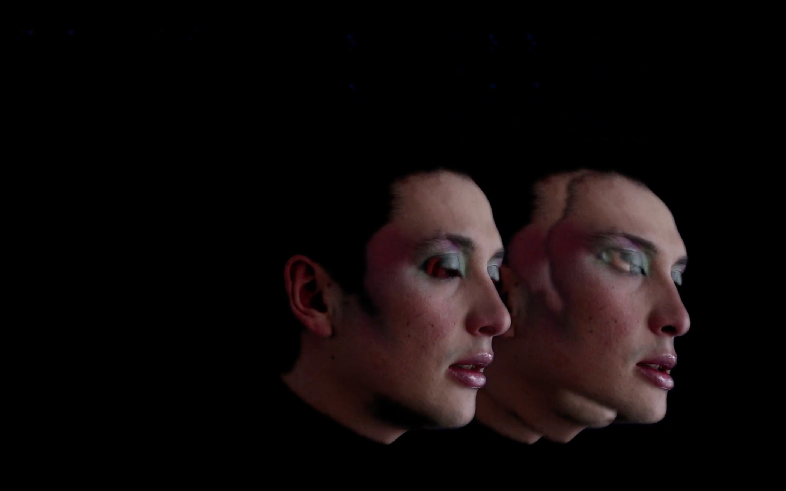
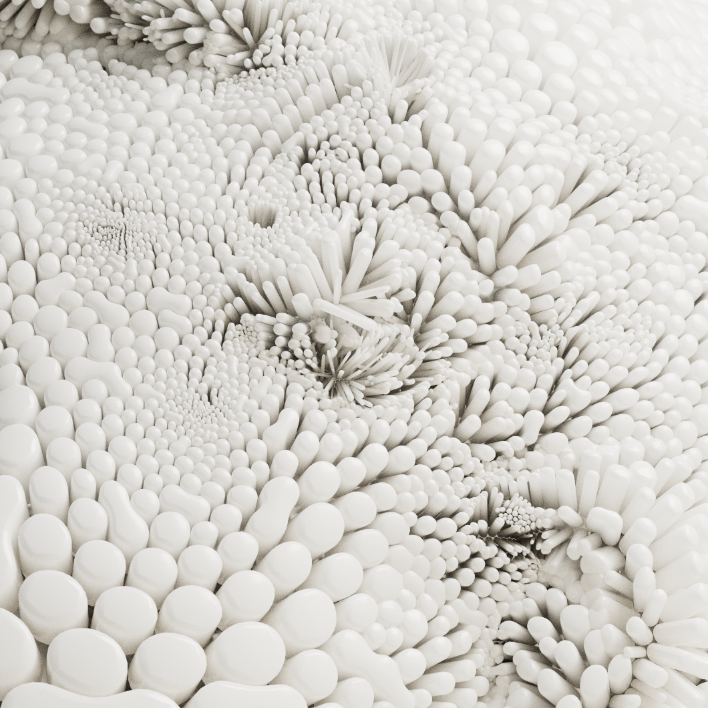
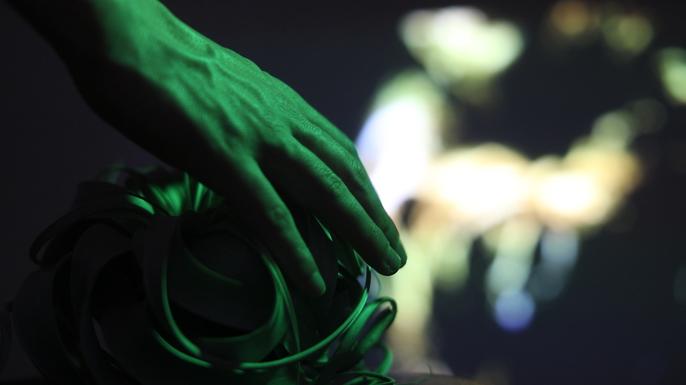
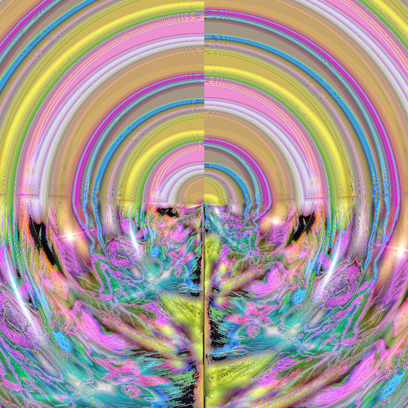
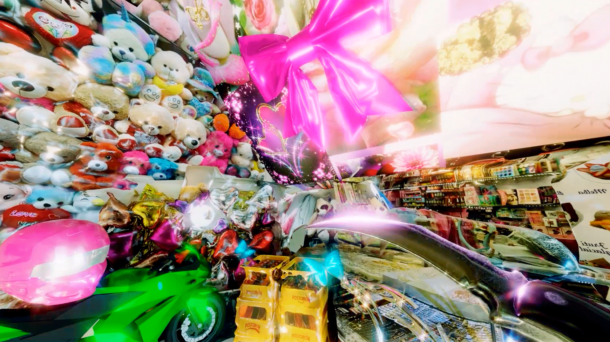
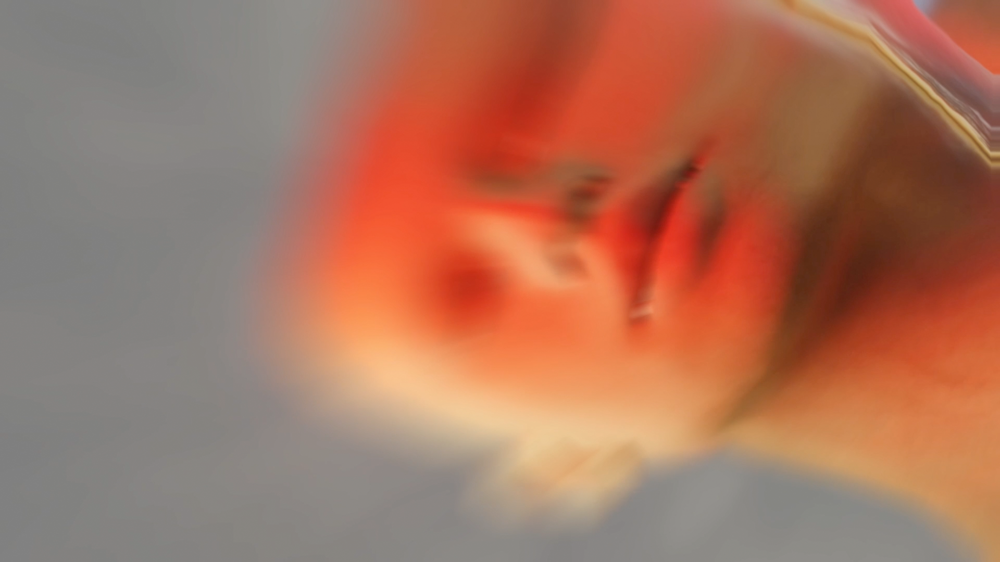
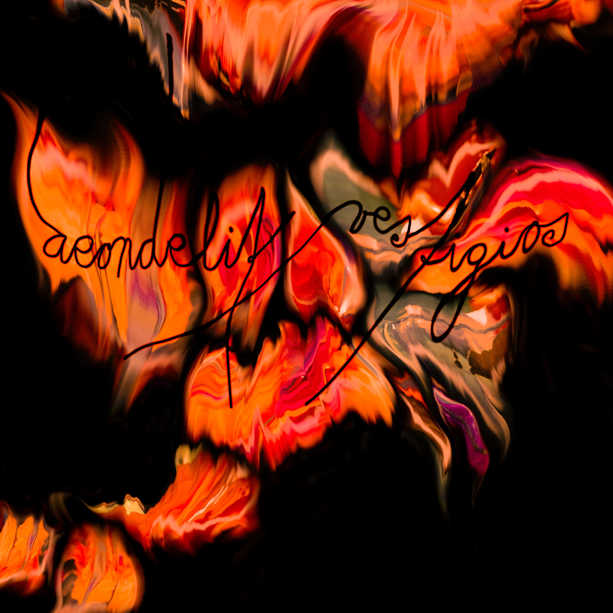

← ATRAS
Camilo Acosta (Huntertexas)

Camila Arevalo
Carlos Serrano

José Miguel Mejía
Juan David Figueroa

Julian Guzmán
Mario González
Namz Anil

Nea Gonorrea x Trvshologram

Nicolh Ávila

Sergio Cortez (Aeondelit)

Bogotá, COL | Sequences to delete